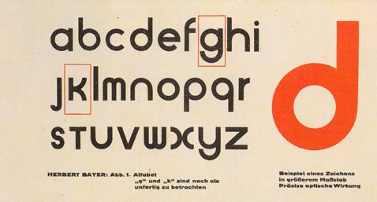
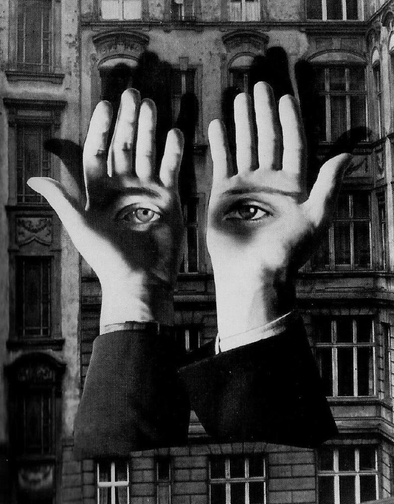
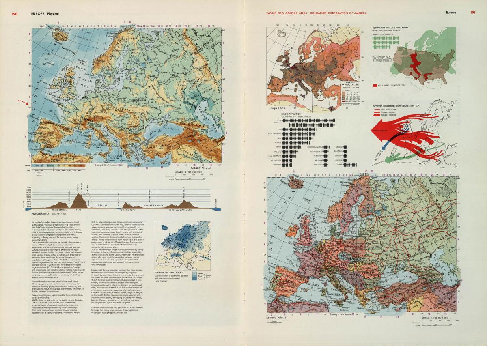

En este pagina expondremos algunos de las Trabajos sobresalientes que hizo Herbert Bayer a lo largo de su vida
Herbert Bayer

Tipografía creada por el, utilizada en las publicaciones de la Bauhaus

Trabajo de fotomonfajePortada para Harper`s BazarAtlas concebido como regalo de empresa de la CCA EN 1953
